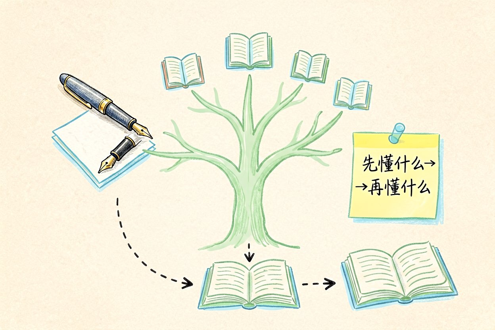
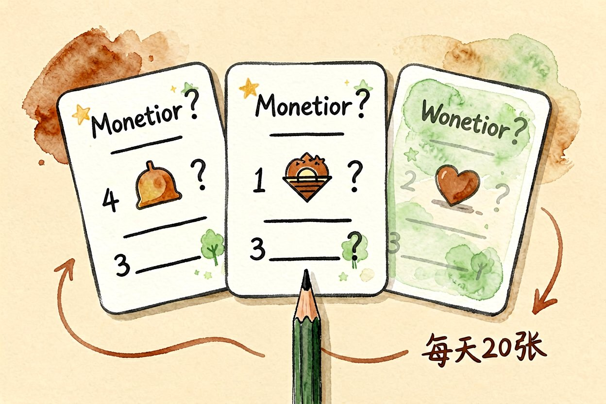
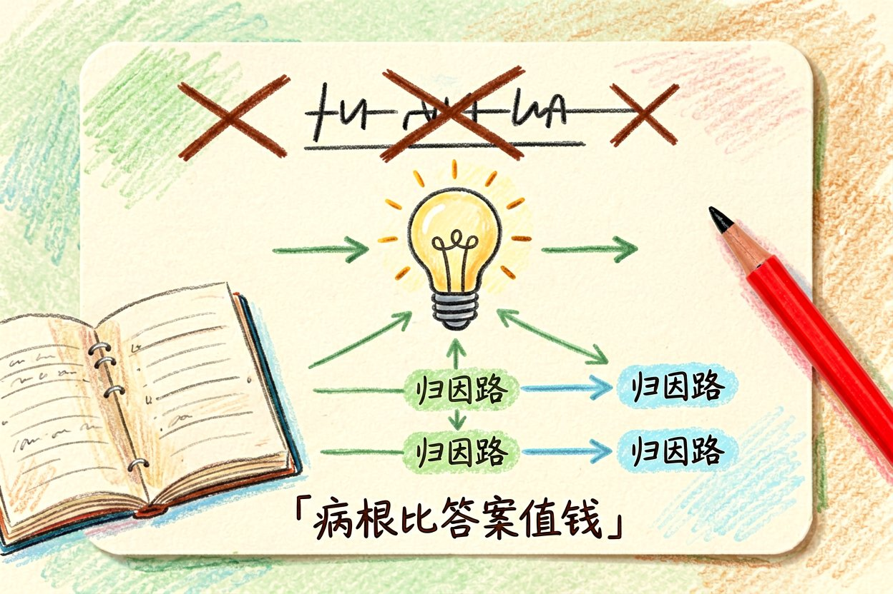
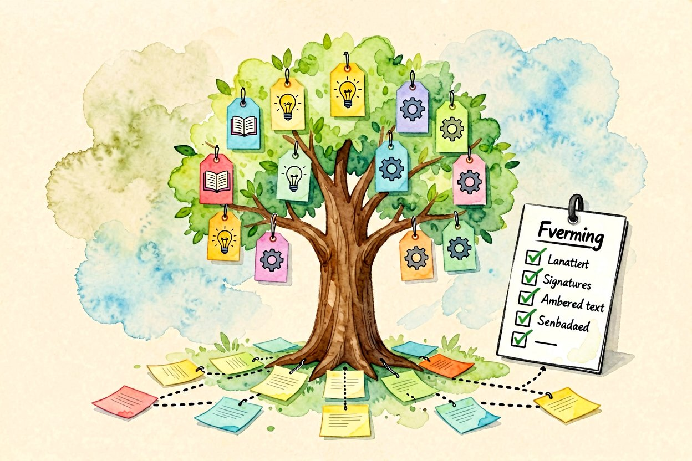
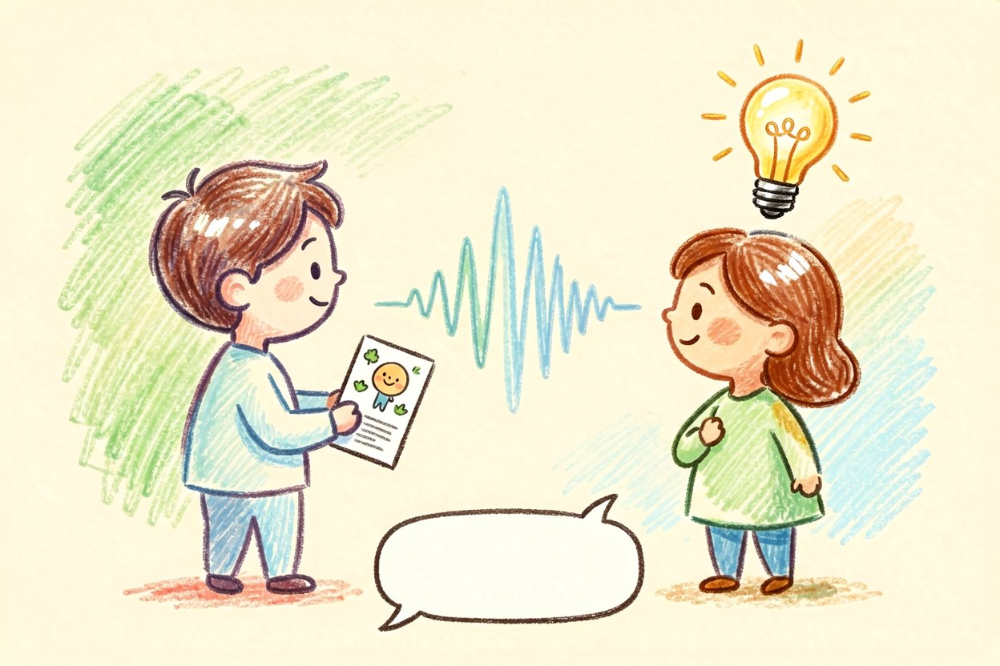
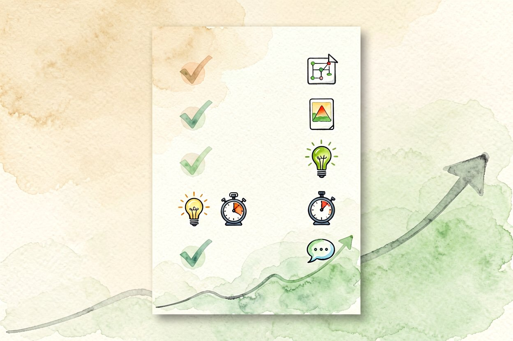

用 AI 提升学习效率的五个具体方法
同样一小时，有人用 AI 学完三章，有人还在抄笔记。差距往往不在工具，而在怎么用。
AI学习效率的关键，不是让模型替你学，而是替你省掉整理和复述的苦力，把时间留给真思考。下面五个方法都能今天就用，关键在坚持，不在收藏。工具是杠杆，支点得是你自己的脑，靠它偷懒只会越学越空。
AI学习效率第一招：预习出大纲

读新章节前，把标题和目录丢给模型，让它出一张"先懂什么、再懂什么"的地图。带着结构去读，比从第一行硬啃快得多。大纲不是让你跳过原文，而是让大脑提前有挂钩，读的时候信息挂得住。每次预习五分钟，整章读完能省下半小时返工，这笔账很划算。预习时顺手标出"哪块可能难"，读的时候重点盯，效率差一倍。
二、复习让它出问答卡

学完让模型把要点变成填空题和简答题，自己闭卷答。答不出的就是漏洞，比反复划线有用。问答卡逼你回忆，而回忆才是记忆真正发生的动作，划线只是手的惯性。每天睡前过一遍当天的卡，比周末突击扎实，记忆曲线最吃规律复习。别贪多，每天二十张卡比周末刷两百张有用。卡片是帮你记住，不是堆数量吓自己。
三、错题让它讲归因

错题别只记答案，让模型分析"这一步为什么错、对应哪条概念"。讲清归因，才不会同错第二次。归因比答案值钱，知道病根，同类题换皮你也能认出来。把归因写进错题本，下次考前翻一遍，比重做十道新题提分快。答错的卡标记重点，第二天先过它们，遗忘对抗战就赢了一半。
四、笔记让它归类

散落的想法丢给模型，让它按主题归拢成知识树。下面是思路，结构清了回忆路径就短：
plan = {
"预习": "AI 出大纲",
"复习": "AI 出问答卡",
"错题": "AI 归因讲解",
}笔记的价值在连接，不在堆量，归类让知识点之间长出小路。零散笔记不归类，等于把知识塞进抽屉永不打开，考前照样抓瞎。归类时顺手写一句"这能用在哪"，知识才接上地气。纯收藏不用的笔记，和没记一样。每月回看一遍知识树，删掉过时的，留下的才是真长在你脑子里的。
五、自测限时做
让模型按考纲出限时小测，逼自己输出。能讲出来才是真会，光看答案最骗自己。限时制造压力，模拟考场状态，平时练出抗压，上场才不慌。输出比输入难，也正因为难，它才是检验真会的唯一标准，别用"我看懂了"骗自己。讲卡壳的地方就是没真懂，标记回头补，比看十遍都牢。
六、复述讲给旁人听

学完一章，试着用大白话说给朋友，或对着手机讲一遍。讲卡壳的地方就是没真懂。输出倒逼输入，比看十遍都牢。讲的时候别看稿，卡住就标记，回头补那块。这招对付"假懂"最灵，很多人觉得自己会了，一讲就露馅。每周挑一个知识点讲给同事听，讲通了才是真会，讲不通就说明还得回炉。
AI学习效率靠的是"它做重复、你做判断"。别把思考也外包，主动输出的部分，一定要自己来。每周复盘哪招真在用、哪招在吃灰，留下的才是你的方法。期末把整棵知识树导出成一页，复习效率比翻几十个聊天记录高十倍，这才是 AI学习效率落地的最后一步。

本文信息核对于 2026-08-31。AI 产品的价格、免费额度与功能变动频繁，实际以各工具官网当前说明为准。